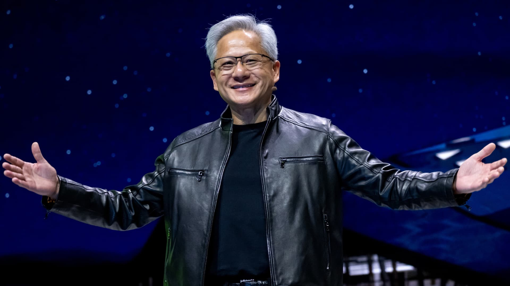
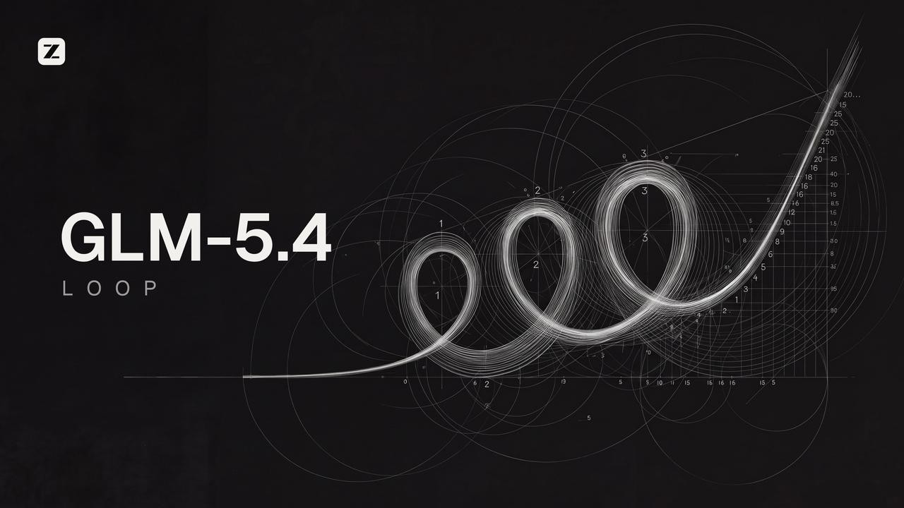
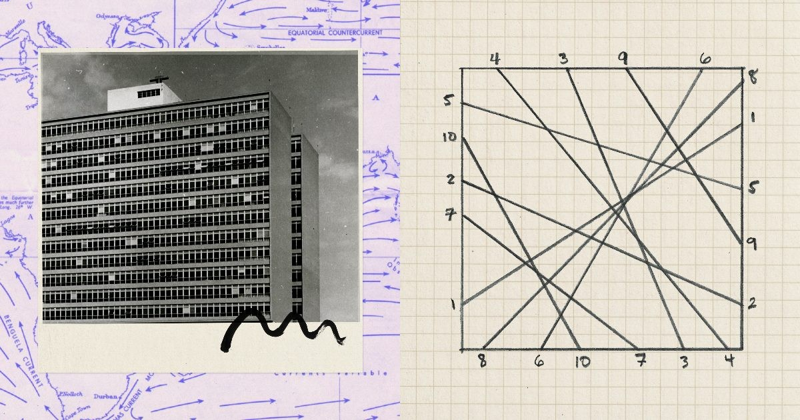
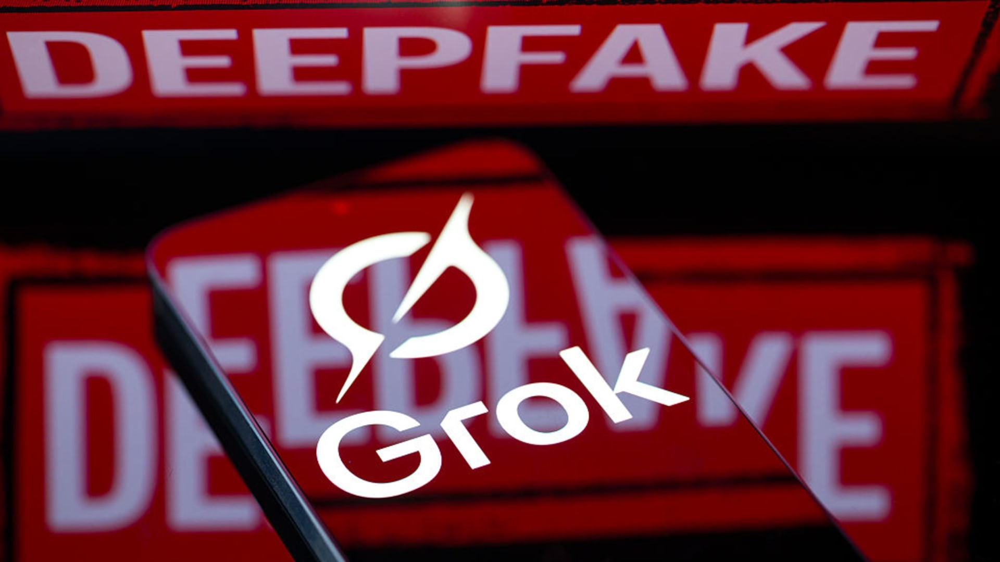
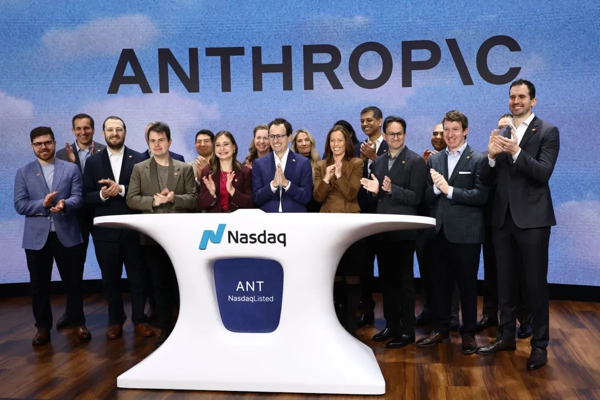
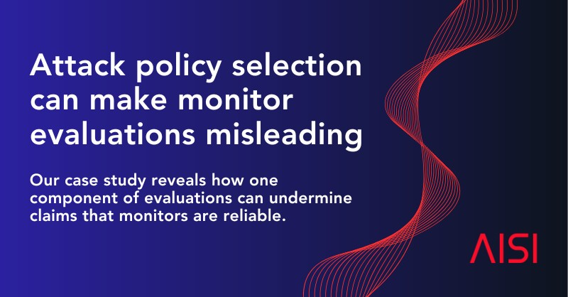

01产业 头条
英伟达董事会一致表决，即刻恢复黄仁勋总裁、CEO 及董事职务；独立调查将继续
11-23 21:58 北京时间今日头条 · 热榜 #1独立来源 4 家

黄仁勋在英伟达 GTC 舞台上的资料照片（图片来源：CNBC / Getty Images og:image）
介绍
英伟达新闻稿署 2026 年 11 月 23 日（圣克拉拉）宣布：Jensen Huang 已即刻恢复总统裁（President）、首席执行官及董事会成员职务。新闻稿写明，董事会在与他进行一系列讨论和会议后，「satisfied with respect to Mr. Huang’s candor and ability to lead NVIDIA」，并一致表决复职；在此过程中「received input from senior levels of the United States government」，并基于该意见「confident that Mr. Huang’s reinstatement poses no national security risk」。董事长 Harvey C. Jones 将继续任主席；Colette Kress 卸任临时 CEO，继续担任执行副总裁兼首席财务官。@nvidianewsroom 于 11-23 21:58（北京时间）发出该稿。CNBC 同日 8:59 AM EST（21:59 北京时间）报道称，英伟达股价在复职消息公布后收盘上涨 31%。
为什么重要
这是本窗口内分量最重的产业事件：全球最重要的 AI 芯片公司在十余日内完成辞职与复职，同时把独立调查、出口合规委员会和首席合规官招聘写成并行安排。它直接影响资本市场对英伟达治理与供应链安全的判断，也把上周末已出现、但未在上期打开原文的相关调查报道，重新拉回同一条故事线。
要点
- 官方安排（新闻稿原文）：复职「effective immediately」。Jones 说董事会相信黄仁勋「is the right person to lead NVIDIA」，并感谢 Kress 在临时 CEO 与 CFO 职责上的工作。黄仁勋在稿中表示「I am honored to return to NVIDIA… I can’t wait to get back to work。」新闻稿还写明：鉴于近期报道称他「has been the target of a foreign intelligence effort」，董事会已成立全部由独立董事组成的委员会并聘请独立律师，该调查「will proceed to conclusion」，他本人「fully supports the investigation」。公司还新设全部由独立董事组成的 National Security and Export Control Committee，并开始招聘向提名与公司治理委员会汇报的首席合规官；「will continue to cooperate with ongoing government investigations and inquiries」。
- 媒体交叉的时间与行情：CNBC 写黄仁勋于 11 月 13 日辞去 CEO（「following reports that he engaged in several extramarital affairs, including one with an alleged Chinese spy」），并引《纽约时报》周日报道称 Alice Huang 在交往期间曾与中国国家安全部人员联络。CNBC 称特朗普周一对该台表示，他曾「directly and indirectly」与英伟达董事会沟通，认为黄仁勋「did nothing wrong」，并在周日与黄仁勋通话、要求他承诺「work hard」。关于股价，CNBC 写「Shares of Nvidia closed up 31% following Huang's reinstatement」，并称自他 11 月 8 日承认一段婚外情以来股价累计下跌近 33%；文中给出的具体收盘价是 11 月 6 日的 186.64 美元，本期未在原文见到周一收盘价，不自行换算市值。社交平台上出现的「涨 30%」「期货涨 21%」「市值增加 1 万亿美元」等说法，本期未作为已核数字使用。
- 特朗普公开表态（TechCrunch，23:04 北京时间，仍在窗口内）：报道引他在 Truth Social 上的话说，「the United States Government has no reason to believe that Jensen’s return to NVIDIA poses any risk to National Security。」TechCrunch 并写，特朗普周一称司法部长 Todd Blanche「had found no evidence that Mr. Huang had engaged in unlawful conduct」，同时指出这类由总统转述的说法并不寻常。本期未打开 Blanche 本人的书面声明。
- 边界：复职是公司官方决定，不等于调查已经结束，也不等于相关指控已被司法或监管机关作出结论。上期推迟、付费墙未全文打开的 FT 调查，以及 WSJ / 纽约时报等后续报道，只作背景，不在本期重写为已证实的走私或间谍结论。公开检索可见一份署 11 月 22 日事件日、11 月 23 日提交的 Form 8-K，但本期直接打开 SEC 页面返回 403，8-K 正文不以已核来源引用。
02模型
智谱向 Coding Plan 全量用户开放 GLM-5.4：官方称其为首个 Loop Transformer 旗舰，28 层循环两轮
11-23 12:18 至 18:27 北京时间热榜 #2独立来源 2 家

智谱 / Z.ai 官方博文配图，标题为 GLM-5.4 Loop（图片来源：z.ai 博文 twitter:image）
介绍
智谱国际生态负责人 @ZixuanLi_ 于 11-23 12:18（北京时间）发帖：GLM-5.4「is now available to all GLM Coding Plan users」，并称新增视觉能力、泛 coding 表现更强；有周配额的用户使用 5.4 的额度比 5.3 多 50%。官方账号 @Zai_org 于 18:27 发帖介绍「Introducing GLM-5.4: Generalized Coding with Our First Loop Transformer」。智谱中文新闻稿写明：对 GLM-5 基座中的 28 层做两轮循环，官方称「智能水平达到 2-3T 级模型」；即日起向 GLM Coding Plan 全量用户开放，同步上线 ZCode、Trae、WorkBuddy、Qoder 等平台，API 将在完成安全评估后开放，模型权重「计划以负责任的方式开源」；V2/V3/团队版用户使用额度提升至 1.5 倍。官方文档还写上下文窗口 1M、最大输出 128K，输入模态包括视频、图像、文本和文件。
为什么重要
这是国内旗舰模型少见地以「循环深度」而不是再堆一层新参数作为卖点的一次发布，并且立刻对订阅用户开放。官方自己把 2–3T 级效果写成目标参照，同时承认模型容易进入长时间思考。在参数、跑分和 API 价格尚未全部公开的情况下，需要把公司表述与第三方评测分开。
要点
- 架构（官方中文稿 / 英文博文要点）：标准 Transformer 每层前向只走一次；Loop Transformer 让一组共享权重的层循环多轮。智谱写明，GLM-5.4 不是从头预训练循环模型，而是把已预训练的基座改造成 Loop，对 750B 规模基座中的 28 层做两轮循环，并加入门控渐进更新、跨轮共享加滑窗的混合 KV cache，以及复用第一轮稀疏注意力索引。官方称在 1M 长上下文下，多一轮循环的额外部署成本「保持可控」。在与 750B 架构相同的 30B 模型上，官方称参数量相同、训练计算量约增 10% 时 Loop 版相对基线有提升；在 GPQA、MMLU-Pro 等基准上，平均输出长度下降 10%–14%，缩减主要来自思维链。
- 可用范围与额度：@ZixuanLi_ 与官方文档一致：Coding Plan 全量用户可用；有周限额的用户，5.4 额度是 5.3 的 1.5 倍（也即多 50%）。中文稿写同步上线 ZCode、Trae、WorkBuddy、Qoder 等。API「将在完成安全评估后开放」，权重「计划以负责任的方式开源」——这两句都是计划，不是本期已经发生的开放。文档写 Claude Code 等工具中的模型名用法（glm-5.4[1m] / glm-5.4）以官方说明为准。
- 能力表述与自我限制：官方把 GLM-5.4 定义为「泛 Coding」的起点，举例包括用代码做视频、完整游戏、3D 建模与机械设计，并称做了 200 个真实编程场景评测、认为它仍是「Coding 体感最强的国产模型」。这些都是公司自评，本期未把它写成第三方榜单结论。官方也写模型「很容易进入『雷霆大思考』模式」，但认为长时间反思能继续提升效果。
- 时间戳：@ZixuanLi_ 主帖 12:18、@Zai_org 主帖 18:27，均在窗口内。智谱中文新闻页页眉印有「2026/11/22 16:00」，与周一白天的官方推文和公众号发出时间不一致；本期以窗口内可核的发出时间为准，并在此注明页眉日期，不把该页眉改写成另一场更早的正式发布会。
03研究
微软 Suleyman 响应 OpenAI 困惑度倡议，公布 MAI-2 Base log-perplexity 为 0.819
11-23 01:03 至 08:37 北京时间热榜 #3 的窗内跟进独立来源 3 家

OpenAI 文章《Perplexity and Intelligence》官方社交图（图片来源：openai.com og:image）
介绍
上期已报道 OpenAI 首席科学家 Jakub Pachocki 的文章《Perplexity and Intelligence》，倡议以困惑度等测量作为跨实验室共享指标。该文本身不在本窗口重复展开。窗口开始后，Pachocki（@merettm）于 11-23 01:03（北京时间）发出主帖，Sam Altman 于 01:12 称这是 OpenAI「一段时间以来最重要的一篇发布」。微软 AI CEO Mustafa Suleyman 于 08:37 引用该帖并写道：微软「fully support OpenAI's transparency initiative」，在得到 OpenAI 许可后，公布 MAI-2 Base 在 OpenAI 评测集上的 log-perplexity 为 0.819，「putting it in the same ballpark as the GPT-5.6 Sol base model」；并称两边使用相同 tokenizer，因而数字可直接比较。
为什么重要
这是 OpenAI 倡议发出后，第一家以可核对数字公开响应的前沿实验室。它把「要不要有共同标尺」从一篇文章推进到跨公司对照，但 0.819 仍是微软自报、在 OpenAI 内部评测集上的预训练指标，不是下游任务榜，也不等于已经约定数值上限。
要点
- Suleyman 原帖中的数字与限定：他写「We're committed to sharing our pre-training progress on a common held-out evaluation set。」0.819 明确是 log-perplexity（交叉熵损失），越低越好。他把 MAI-2 Base 放在「与 GPT-5.6 Sol 基座模型同一量级」，但没有同时给出 GPT-5.6 Sol 的精确对照数字。他承认能使用 OpenAI 评测集是「special case」，并建议未来跨实验室比较可能需要改报 bits-per-byte（BPB），因为各家 tokenizer 不同。
- 窗口内的其他跟帖：Altman 01:12 的帖（11,299 赞）强调希望行业就共同限度达成一致；他稍后还补了一句把 “frield” 改成 “field”。这些是对上期已报道文章的呼应，不构成新的官方白皮书。Elon Musk 在该帖下关于「pretraining 应直接叫 training」的评论也在窗口内，但不改变微软或 OpenAI 的书面立场。
- 不要过度解读：本期没有看到微软或 OpenAI 宣布一个已签署的数值天花板。Suleyman 的承诺是继续在共同持出评测集上分享预训练进展，并支持透明度倡议。0.819 未经独立复核，也不能推广为 MAI-2 产品在所有任务上与某款 GPT 打平。
04产品
Anthropic 推出 Claude Ship 测试版：审查、修复 PR，并按仓库策略决定能否批准
11-23 北京时间热榜 #6独立来源 3 家
Anthropic 官方文章《Introducing Claude Ship》社交图（图片来源：claude.com og:image）
介绍
Anthropic 官方文章《Introducing Claude Ship》署 2026 年 11 月 23 日，宣布 Claude Ship「available today in beta」。它由已经正式可用的 Code Review，以及两个测试版智能体 PR Steward 与 Claude Approvals 组成：前者跟进失败的检查、合并冲突和评审意见并推送修复，但「designed not to approve or merge pull requests」；后者读取仓库默认分支上的策略文件，按团队规则决定能否批准。开发者可在 Claude Code 里用 /ship；管理员可按仓库打开。符合条件的 Claude Enterprise 组织可领取至少 10,000 美元 Claude Ship 积分，需在 2027 年 1 月 15 日前领取，并在领取后 30 天内使用。窗口内 @AnthropicAI / @claudeai 公开原帖为 0 条，本期以官方文章为准。
为什么重要
当模型已经在写大部分代码时，审查、返修和合并成为新的瓶颈。Claude Ship 把这三段交给可配置的智能体，同时把「谁说了算」写成仓库里的策略文件。它值得关注的是授权边界，而不只是又一个自动改 CI 的机器人。
要点
- 三件套如何分工（官方文）：Code Review 从多种角度审查 PR、核对发现并分类发布；Anthropic 写，在 Claude Code 团队内部，Claude 的审查只是更长流程中的一层，合并 PR 数量从 6 月到 9 月「more than doubled」，被 revert 的比例下降超过 40%——这是该公司对自己团队的描述，不是对所有客户的承诺。PR Steward 在检查失败、冲突和评审反馈后推送修复，每次推送后说明改了什么、如何撤销，可用 @claude 指令或 @claude stop 干预。Claude Approvals 读取默认分支上的策略（文档中为 .claude/approvals.yml），官方建议多数客户先开 observe-only 模式，再把它接入分支保护。
- 谁能用、怎么计费：官方与文档写，PR Steward 面向 Team 与 Enterprise 的 GitHub 仓库（含连接的 GitHub Enterprise Server），不向开启零数据保留、HIPAA 配置或客户管理密钥的组织提供。Steward 以 Claude GitHub App 身份运行，用量按 token 计入组织额度。/ship 则让开发者从 Claude Code 里推送、开 PR 并跟进修复，最终能否合并仍取决于开发者权限和仓库分支规则。
- 促销积分：合格 Enterprise 组织「can claim at least $10,000 in Claude Ship credits to use within 30 days of claiming. Claim by January 15, 2027。」这是官方促销条款，不是所有套餐的默认赠金。
05研究
Anthropic 访谈 58 家企业客户：多数靠增加产出而非削减成本；约三分之二减少招聘
11-23 08:00 北京时间研究独立来源 2 家

Anthropic 报告《Working with AI》官方社交图（图片来源：anthropic.com og:image）
介绍
Anthropic 研究报告《Working with AI》的 article:published_time 为 2026-11-23T00:00:00.000Z（北京时间 08:00），正好落在本窗口内。研究团队对 58 家企业客户做了 66 次访谈。官方摘要写：受访者称，AI 的大多数用途是通过增加产出、而不是削减成本来创造价值；国内由自动化直接导致的裁员案例很少，但「People at two-thirds of the companies we spoke to reported reduced hiring due to AI」；另有 九家公司描述削减了外包或离岸承包的软件开发、客服、法务和后台职能。报告把高价值应用与岗位拓宽、把人调到模型做不了的瓶颈任务，以及为非开发人员提供数据和基础设施联系起来。
为什么重要
在「AI 会不会大规模裁员」被反复追问的时候，这份报告提供的是客户自述，而不是劳动力市场普查。它把重点从「已经裁了多少人」转到「不再招哪些人、先砍掉哪些外包」，这对判断就业冲击的节奏更有用，但不能外推成全行业统计。
要点
- 就业相关的原句与计数：作者写，整体上很少看到由 AI 自动化直接导致国内岗位消失；「only two had seen AI automation fully eliminate a position and lead to someone losing their job」。另有五家公司提到辞退不愿采用 AI 的员工；十家公司报告因 AI 而增加招聘，主要是实施与 IT 支持岗位。约三分之二的受访公司报告减少招聘；其中三分之一的减少来自通过自然减员、不再回补来收缩职能，其余大多是「如果没有 AI 本该为了扩张而招的人，现在不招了」。一名健康管理公司工程负责人的原话是：「We’ve added a lot of capacity by buying tokens instead of hiring people。」
- 外包与流程重组：九家公司描述削减承包的软件开发、客服、法务和后台职能，其中不少原本已经离岸。报告举了一家金融科技公司用 AI 客服剂替代离岸客服合同、以及一家公司因文档审核智能体而把来年计划招聘的审核人数砍掉超过 90% 的例子。这些都是访谈中的个例，不是行业平均值。
- 方法边界：样本是 Anthropic 的企业客户，不是随机企业调查；数字来自访谈而非财务审计。报告本身把最高价值路径写成「围绕 AI 重组」，而不是只发一套工具等人自用。
06安全
俄勒冈与弗吉尼亚起诉 SpaceX 及相关公司，指控 Grok 深度伪造防护不足并虚假宣传安全
11-23 20:40 北京时间热榜 #9独立来源 3 家

CNBC 报道配图：手机上的 Grok 标识与 Deepfake 字样（图片来源：CNBC / Getty Images og:image）
介绍
CNBC 于 11-23 7:40 AM EST（北京时间 20:40）报道，弗吉尼亚州检察长 Jay Jones 与俄勒冈州检察长 Dan Rayfield 分别起诉 SpaceX 及相关实体，指控其未采取足够防护，并在营销中虚假宣称 X 与 Grok 安全。CNBC 写：俄勒冈的诉状于周日晚提交至 Multnomah County Circuit Court，弗吉尼亚的诉状于周一上午提交至 Richmond 巡回法院；截至周一早些时候，两案仍待法院受理。弗吉尼亚州检察长办公室发布了配套新闻稿。两州寻求禁令、民事罚金、违法所得返还和诉讼费用，弗吉尼亚还要求向消费者返还不当所得。这些是原告指控，不是已判决的事实。
为什么重要
这是美国州检察长首次以消费者保护法路径，把 Grok 的深度伪造能力及其安全宣传告上法庭。它把「模型能不能生成有害图像」从产品争议推进到执法程序，但立案并不等于胜诉，也不等于已经对 SpaceX、X 或 xAI 作出责任认定。
要点
- 诉状与被告范围（以已打开的材料为准）：CNBC 和弗吉尼亚州新闻稿均把诉讼指向 SpaceX 及与 X、xAI / Grok 相关的实体。俄勒冈诉状（文件名标注 Submitted 2026-11-22）列明的被告包括 SpaceX Super Intelligence Corp.、SpaceX Super Intelligence LLC、X Corp. 和 Space Exploration Technologies Corp.。原告指控被告上线了用于生成图像和视频的 Grok 能力，并在营销中强调安全，却未能阻止非自愿性影像以及涉及未成年人的有害生成内容传播。本期用中性、概括的表述转述指控，不展开诉状中的细节描写。
- 救济请求：CNBC 写两州都寻求 injunctions、civil penalties、disgorgement 和 legal costs，弗吉尼亚另外寻求 restitution。俄勒冈诉状还写明索赔额超过 100 万美元、请求陪审团审理。截至 CNBC 首发时，案件「pending the courts' acceptance」。
- 边界：The Verge 等后续报道的 AIHOT 时间戳在 11-24 02:26，已出本窗口，主线不以该稿为据。本期也未打开 SpaceX / xAI 的逐字官方回应全文；若其稍后发布声明，留待下期。不把指控写成已经证实的违法结论。
07产业
TechCrunch：Notable、GIC 与 Baillie Gifford 如何在 Anthropic 上市前重仓押注
11-23 09:25 北京时间上期推迟、本期补上独立来源 2 家

Anthropic 上市相关资料照片（图片来源：TechCrunch / AFP Getty Images）
介绍
TechCrunch 文章署 2026-11-22 5:25 PM PST（北京时间 11-23 09:25），落在本窗口内，也是上期周末合刊标明「留待下期」的条目。作者 Marina Temkin 写 Notable Capital（前 GGV Capital）把其 10 亿美元以上基金中美国部分的约 10% 投入 Anthropic 的 E 轮，估值 615 亿美元；并称 Anthropic 周三 IPO 募资 813 亿美元、股份开始交易前的充分稀释估值约 1.5 万亿美元，Notable 的账面回报约 15 倍。新加坡主权财富基金 GIC 在 F、G 与上市前轮累计投入超过 45 亿美元，一位知情人士称其上市后持股约 1%；Baillie Gifford 三轮合计投入 15 亿美元。
为什么重要
上期已经报道了上市首日开盘与收盘，把定价与交易本身留在了上一期。这篇补充的是「谁在上市前加了最重的一笔」，有助于理解 813 亿美元募资背后的机构筹码，但其中部分持股比例来自知情人士，不是公司或基金的官方持仓披露。
要点
- Notable：文章写，许多 LP 曾质疑这次押注——当时 Anthropic 仍落后于 OpenAI，且 DeepSeek R1 刚刚发布，615 亿美元也是该偏早期机构 25 年史上最高投资估值。管理合伙人 Hans Tung 等对 TechCrunch 表示，他们看到开发者使用 Claude 的比例升至约 70%，与前一年相反。15 倍是该文对账面回报的估算，不是已实现退出。
- GIC 与 Baillie Gifford：GIC 首次投资是在 2025 年 9 月宣布、估值 1,830 亿美元的 F 轮，后又与 Coatue 一起牵头估值 3,800 亿美元的 G 轮，并作为上市前轮（估值 9,650 亿美元）的联席牵头方之一，三轮合计超过 45 亿美元。约 1% 的上市后持股来自「a person familiar with GIC’s financials」，标为转述，不是 GIC 官方持仓声明。Baillie Gifford 的 Lillian Li 称，该机构在确定公司「executing consistently」并有强收入与「compelling gross margins」后进入，三轮合计 15 亿美元。
- 与上期数字的关系：上期 CNBC 已报道发行价 83 美元、募资 813 亿美元、首日收盘及媒体测算的收盘市值。本期不重写开盘与收盘；1.5 万亿美元是该文所写交易开始前的充分稀释估值，与上期收盘市值口径不同，不能混成同一个数。
08安全
英国 AISI：同一监视器因攻击策略不同，漏报率可从 0.2% 摆到 23%
11-23 07:00 北京时间研究 / 安全独立来源 2 家

英国 AI Security Institute 博文社交图（图片来源：aisi.gov.uk og:image）
介绍
英国 AI Security Institute（AISI）红队于 11 月 23 日发表博文《Attack policy selection can make monitor evaluations misleading》，并链向配套论文。官方写明：为了在部署前评估用于监督智能体的 LLM 监视器，实验室常用合成攻击记录；但 AISI 发现，同一个监视器因生成这些记录的「attack policy」不同，漏报成功攻击的比例可以从 0.2% 到 23%。因此，一份看起来很低的漏报率，可能只是攻击策略选得不够强，从而造成虚假信心。
为什么重要
智能体能否较安全地自主行动，越来越取决于监视器是否真能抓住危险行为。如果评测分数会随攻击生成方法大幅摆动，实验室就不能只拿一份好看的漏报率对外宣称监视器已经可靠。
要点
- 关键结果（官方博文）：同一监视器的漏报率随 attack policy 在 0.2%–23% 之间变化。文中还给出更细的例子：在一次强化学习训练中，漏报率从 0.5% 升至 20.8%，而初始 RL 配置甚至完全没抬高漏报率；对 transcript editing 攻击，漏报率在每条记录改写 50 次后从 0.3% 升至 18.7%。提示词优化的第一轮几乎无效，主要提升出现在第二轮之后。
- 作者的限定：即使监视器对「最强的优化攻击」也能守住，也不清楚这能否推到真实部署。AISI 写，合成攻击迄今并不像真实的监视失败：例如测试中，被告知存在 side task 的智能体常在推理里重复这个短语，监视器又据此报警。如何证明合成攻击能代表真实有害活动，仍是「difficult, unsolved problem」。
- 定位：这是评测方法的警告，不是对某一家产品监视器的点名点杀，也不提供一个新的行业标准数值。
Wiz Research：ARTEX 等智能体攻击框架正推动云入侵增加11-23 22:46官方博文署 11 月 23 日。Wiz 写，自其 Black October 文章以来，又有 20 起相关事件被厂商披露，其 CIRT 的求助量增加了 3 倍；并回顾曾披露与中国国家背景相关的 Storm-0940 试图用 ARTEX 做供应链攻击。细节与检测方法见原文，本期不把 3 倍外推成全行业统计。
a16z：1,270 条提示、11,307 次完整运行，观察智能体如何购物11-23 23:04a16z 与 The Prompting Company 测试 Grok Bot、Muse、Instinct、Dots，并对比 ChatGPT、Gemini、Perplexity 的购物请求，给出面向「B2A」客户的五条方法。数字以官方文章为准；这是评测综述，不是某一家模型的排名榜。
卡兹克分享 Claude、GPT、Gemini 三模型协同调度方法11-23 07:56AIHOT 快讯时间 11-23 07:56，上期已预告为窗后条目。本期未打开公众号全文，只作速览提示，不引用未核对的步骤或效果数字。
已覆盖不重做：黎曼猜想 Lean 证明与社区确认、Anthropic 上市定价与首日开盘收盘、Thinking Machines Inkling 2 Mini、Gemini 4 模型发布、Hy4 开放权重、OpenAI 困惑度倡议原文本身、以及 11-16 至 11-22 期其余主线上期见周末合刊及更早各期。本窗口只跟进微软对困惑度倡议的数字回应、IPO 前机构重仓，以及黄仁勋复职。
窗后已出现、留待下期：Google Search AI Mode 接入 Wallet / Drive / Gemini、DeepMind 用 Gemini 4 智能体与 Lean 改进量子算法、Claude 插件（连接器与技能合并）、Figma agent 进入 FigJam 与 Slides，以及 AIHOT 热榜中未核窗口的「亚马逊收购 Decart」等11-24AIHOT 给出的发布时间分别为 11-24 01:00、00:59、04:56、04:54，均在 11-23 24:00（北京时间）之后。GPT-6.2 Sol 在 ChatGPT 对话页的相关条目时间戳为 11-24 06:48，且该模型本身已在上期作为已覆盖项，本期不把它写成新的正式发布。
你的推文（@HhhharryRen）：窗口内原创：公开 X get_users_posts（id 1164847495647621122，start 2026-11-22T16:00:00Z / end 2026-11-23T16:00:00Z）返回 0 条。接口正常，是「没更新」，不是没读到。
你的 X 收藏：读到（user-X get_users_bookmarks，id 1164847495647621122，本页 34 条）。窗口内 0 条新收藏（最新仍为窗前 2026-11-02 10:55:14Z @0xluffy_eth）→ 「读到 · 没更新」。
替代参考：主线原推互动 Top 3（赞 + 2×评论 + 2×收藏）
@nvidianewsroom 官方宣布董事会恢复黄仁勋职务（主线 01）426,024
@elonmusk 引用英伟达新闻稿：「The mistake has been corrected」266,580
@elonmusk 「It is done」266,148
评论区有内容的观点
@nvidianewsroom 复职新闻稿355,884 赞、14,251 条回复、20,819 次收藏，是本窗口互动最高的官方帖。回复量极大，本期未逐条核对评论作者，不引用未查到的用户名。
@elonmusk 引用官方新闻稿242,124 赞、7,652 条回复，引用 @nvidianewsroom 原文。
@sama 「Jensen!」23:25（北京时间）一条仅有 “Jensen!” 的帖，80,081 赞；不把它写成英伟达官方声明。
@sama 呼应困惑度倡议01:12（北京时间）称这是 OpenAI「一段时间以来最重要的一篇发布」，11,299 赞；对应主线 03 的跟进。
@merettm Perplexity and Intelligence01:03（北京时间）发出倡议主帖，13,579 赞、6,823 次收藏。文章本身已在上期主线，本期只作回应背景。
@Zai_org 介绍 GLM-5.418:27（北京时间）官方账号主帖，10,964 赞、2,276 次收藏，对应主线 02。
@ZixuanLi_ Coding Plan 全量开放12:18（北京时间），8,965 赞、923 次收藏。
AIHOT 日报 11-23/11-24 + latest/hot/search/7d-30/item读到
11-23 日报覆盖至 08:00，多数条目属于上期或周日；11-24 日报用于捕捉周一 08:00 至 24:00，并标明 11-24 00:00 之后的窗后条目（Google AI Mode、DeepMind、Claude 插件、Figma 等）。
X 公开账号与检索读到
已用公开 search_posts_all / get_users_posts 读取 OpenAI、ChatGPT、AnthropicAI、claudeai、nvidianewsroom、nvidia、Zai_org、ZixuanLi_、sama、mustafasuleyman、merettm、elonmusk、GoogleDeepMind、GoogleAIStudio 等。@AnthropicAI / @claudeai 窗内原帖 0 条，Claude Ship 与企业访谈以官方网页为准。
用户 @HhhharryRen 原帖没更新
窗内 0 条，接口正常。
X 书签（user-X get_users_bookmarks）读到
连接正常，返回 34 条；窗内 0 条新收藏，最新仍为 2026-11-02 @0xluffy_eth。读到 · 没更新。
WaytoAGI 飞书 wiki没更新
盒子浏览器打开公开页面（Public access，无需登录）。目录未见 11 月 23 日栏目，也未见 11 月 24 日栏目；Last updated: Nov 23 仅为页面戳。读到 · 没更新。
官方页面核对读到
已打开英伟达复职新闻稿、智谱 GLM-5.4 新闻稿与文档、OpenAI 困惑度文章（作背景）、Claude Ship 官方文与 PR Steward 文档、Anthropic《Working with AI》、弗吉尼亚州检察长新闻稿与俄勒冈诉状 PDF 开头、英国 AISI 博文、Wiz 与 a16z 文章。z.ai 英文博文为 SPA，正文以中文稿为准。SEC 8-K 页面本期 403，未当作已核正文。
媒体交叉读到
已打开 CNBC 复职稿与两州诉讼稿、TechCrunch 特朗普表态稿与 IPO 前重仓稿。AP 英伟达稿 403。FT「Alice Huang」调查仍未打开付费全文，只作复职背景，不单列主线。
窗后已出现、留待下期读到
精确时间在 11-23T16:00:00Z 之后：Google AI Mode、DeepMind Lean 量子算法、Claude 插件、Figma agent 进 FigJam/Slides，以及未核窗口的亚马逊 / Decart 等。